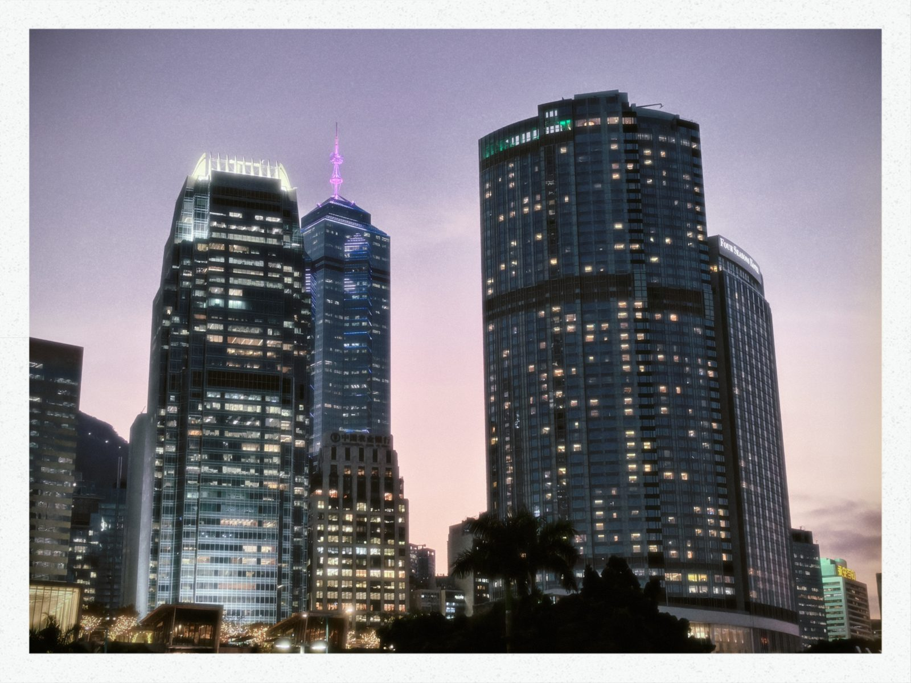
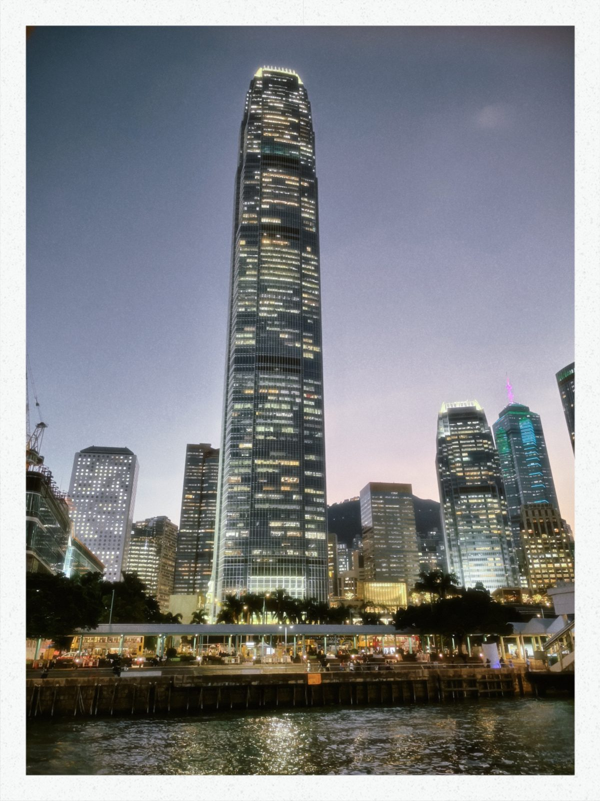
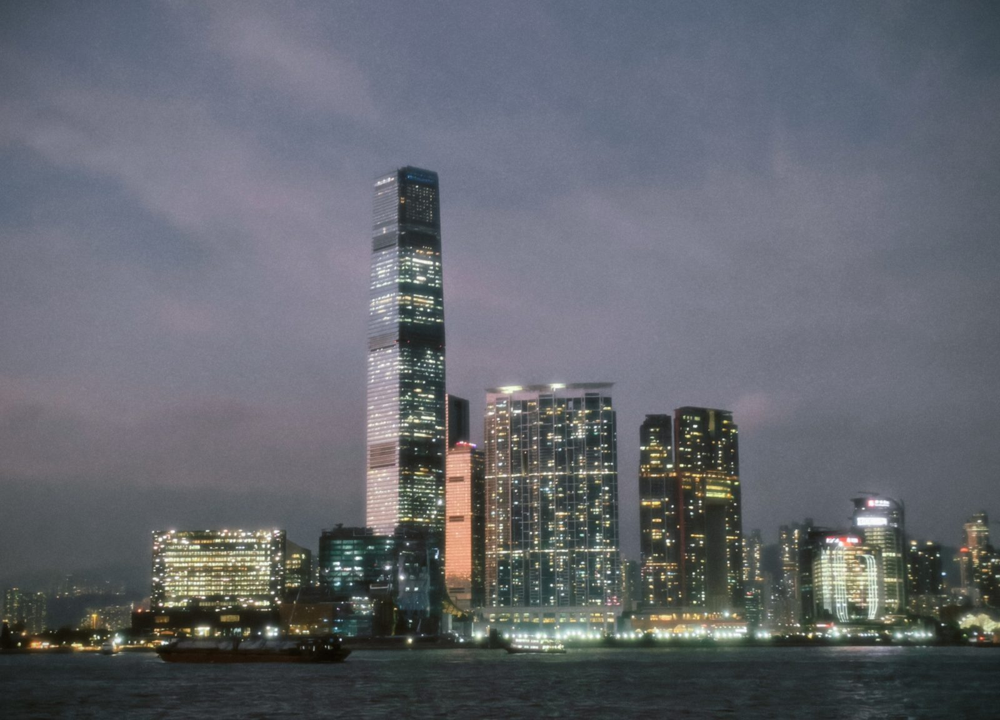

秋假的傍晚，我撞进了一片粉紫色的暮光里。香港的天空像被打翻的调色盘，将中环的那钢铁森林染上了一层温柔的滤镜。
我漫步在海风里，抬头仰望。白日里冷峻的玻璃幕墙，此刻透出暖黄灯光，如一柄刺破苍穹的利剑，又在海面上投下波光粼粼的倒影。长廊上的绿植与游人的剪影，让这宏大的城市有了呼吸感。
夜色渐浓，隔着一湾墨色的海水，对岸的 ICC 像一座孤傲的灯塔。游船划过，水波揉碎了满海星光。在这繁华与幽暗的拉扯中，我突然感到一种抽离的宁静。这一天，我在忙忙碌碌的缝隙里，获得半日清闲。
把这一天的风景、照片和心情，一页一页记下来
秋假的傍晚，我撞进了一片粉紫色的暮光里。香港的天空像被打翻的调色盘，将中环的那钢铁森林染上了一层温柔的滤镜。
我漫步在海风里，抬头仰望。白日里冷峻的玻璃幕墙，此刻透出暖黄灯光，如一柄刺破苍穹的利剑，又在海面上投下波光粼粼的倒影。长廊上的绿植与游人的剪影，让这宏大的城市有了呼吸感。
夜色渐浓，隔着一湾墨色的海水，对岸的 ICC 像一座孤傲的灯塔。游船划过，水波揉碎了满海星光。在这繁华与幽暗的拉扯中，我突然感到一种抽离的宁静。这一天，我在忙忙碌碌的缝隙里，获得半日清闲。


